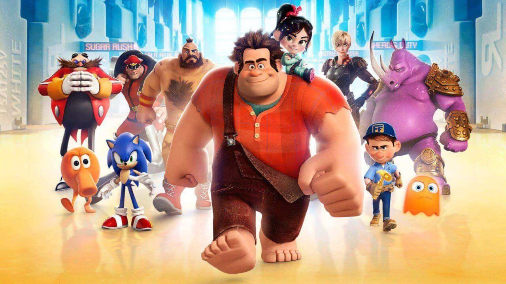

About Ralph
Ralph is awesome. He is not a bad guy but a squishy face who goes on adventures with Princess Vanellope!
Ralph and his buddies
Characteristics
- He's got big hands
- He is besties with a Princess
- He likes cake
Friends
Ralph has tons of friends in the gaming world! Click on the links below to read more about them.